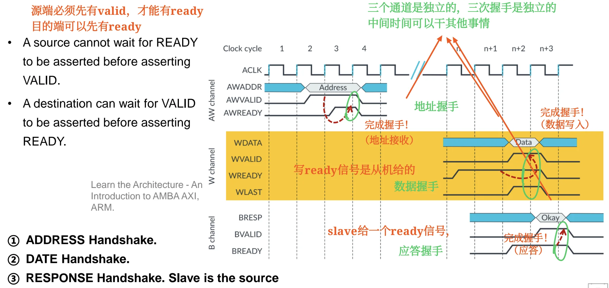
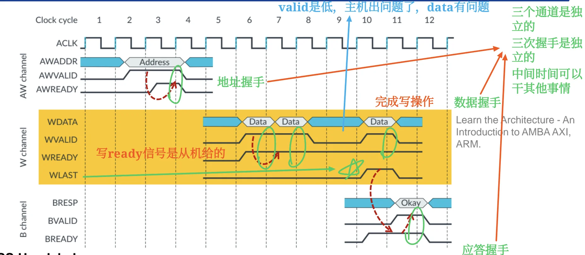

AXI 总线入门与复习笔记¶
来源范围：
bus_part2.pdf中 AXI 相关内容，主要对应 PDF p.26-p.34（课件页脚 64-72）。PDF p.35-p.36 是章节总结和结束页。
这份笔记不按课件页序机械整理，而是按“为什么需要 AXI -> AXI 怎么拆通道 -> 每个通道怎么握手 -> 事务如何并发/乱序 -> AMBA 规格族”的学习顺序组织。
0. 先建立直觉¶
AXI 可以先理解成：一种面向高性能 SoC IP 互连的接口规范。
它和 APB 的气质完全不同：
- APB 像“简单外设寄存器访问”：慢、简单、两阶段。
- AHB 像“高性能共享总线”：有流水、burst、多个 master。
- AXI 更像“多条独立通道组成的事务系统”：读写分离、地址和数据分离、允许 outstanding、支持乱序完成。
AXI 的核心不是“背很多信号名”，而是先抓住三件事：
1. AXI 想解决什么问题¶
对应课件：PDF p.26（页脚 64）
课件先从“提升 AHB 性能”引出 AXI。高性能总线希望具备这些能力：
| 能力 | 含义 | 为什么有用 |
|---|---|---|
| Independent read and write channels | 读和写有独立通道 | 读写可以同时发生 |
| Simultaneous reads and writes | 同时读写 | 提高并行度和吞吐 |
| Multiple outstanding addresses | master 可以发出多个尚未完成的事务 | 不必等前一个事务完成再发下一个 |
| Out-of-order transaction completion | 后发出的事务可以先完成 | 快 slave 不必被慢 slave 拖住 |
| Independent address and data operations | 地址和数据操作没有严格固定时间关系 | 地址阶段和数据阶段可以分离，调度更灵活 |
这些能力正是 AXI 要支持的方向。
所以学习 AXI 时，应该把它放在“更高并发、更高吞吐、更松耦合”的背景下理解。
一个很重要的定义：
AXI 是 interface specification，定义 IP block 的接口，而不是 interconnect itself。
也就是说：
- AXI 规定 master、slave、interconnect 之间的接口信号和握手规则。
- 具体片上 interconnect 怎么实现，可以有不同结构。
- 不要把 AXI 简单理解成一条物理共享总线。
2. AXI 的五个主通道¶
对应课件：PDF p.27-p.28（页脚 65-66）
AXI 使用五个 main channels 通信：
| 通道 | 全称 | 方向 | 主要传什么 |
|---|---|---|---|
| AW | Write Address | master -> slave | 写地址和控制信息 |
| W | Write Data | master -> slave | 写数据 |
| B | Write Response | slave -> master | 写响应 |
| AR | Read Address | master -> slave | 读地址和控制信息 |
| R | Read Data | slave -> master | 读数据和读响应 |
读写结构可以记成：
为什么写需要三个通道？
AW负责告诉 slave：我要写哪里、怎么写。W负责真正传写数据，可以有多个 data beat。B负责 slave 返回写结果，例如是否成功。
为什么读只需要两个通道？
AR负责告诉 slave：我要读哪里、怎么读。R负责返回读数据。- Read Response 不单独占一个通道，而是作为 Read Data 的一部分返回。
这就是课件中的一句话：Read Response is passed as part of Read Data.
3. AXI 的通道独立性¶
对应课件：PDF p.27-p.28, p.32（页脚 65-66, 70）
AXI 的五个通道彼此相对独立，这是理解 AXI 的关键。
3.1 读写独立¶
读事务使用：
写事务使用：
读和写走不同通道，因此可以 simultaneous read/write。
3.2 地址和数据独立¶
写地址 AW 和写数据 W 是不同通道，不要求严格固定先后间隔。
课件里强调：
这意味着只要协议依赖关系满足，地址和数据操作可以在时间上分离。
这就是 AXI 比传统“地址阶段紧贴数据阶段”的总线更灵活的地方。
3.3 响应独立¶
写响应 B 是 slave 给 master 的单独通道。
写事务不是“W 数据送出去就结束”，而是要等写响应握手完成，才算 slave 正式返回结果。
读响应则在 R 通道中和读数据一起返回。
4. VALID/READY 握手¶
对应课件：PDF p.29-p.30（页脚 67-68）
AXI 每个通道都有一对握手信号：
在某个通道上：
并在时钟上升沿到来时，信息从 source 传给 destination，该通道的一次 transfer 完成。
后文如果写成 XVALID=1 && XREADY=1，只表示该通道握手完成的条件，不表示两个信号由同一方驱动。永远记住：XVALID 由 source 驱动，XREADY 由 destination 驱动。
4.1 Source 和 destination 是相对通道而言的¶
同一个 master/slave，在不同通道里的角色可能不同。
| 通道 | source | destination |
|---|---|---|
| AW | master | slave |
| W | master | slave |
| B | slave | master |
| AR | master | slave |
| R | slave | master |
所以：
- 在
AW通道，master 产生AWVALID，slave 产生AWREADY。 - 在
W通道，master 产生WVALID，slave 产生WREADY。 - 在
B通道，slave 产生BVALID，master 产生BREADY。 - 在
AR通道，master 产生ARVALID，slave 产生ARREADY。 - 在
R通道，slave 产生RVALID，master 产生RREADY。
4.2 握手过程¶
一个典型握手过程：
- source 的信息准备好，拉高
VALID。 - destination 准备好接收，拉高
READY。 - 在
VALID=1 && READY=1的时钟上升沿，信息传输完成。 - 若没有新的信息，
VALID可以拉低；READY也可以根据目的端状态变化。
课件特别强调：
也就是 source 一旦声明信息有效，就要保持 VALID=1 和信息稳定，直到出现 VALID=1 && READY=1 的上升沿并完成握手。
READY 信号语义
READY 的协议语义始终是：destination 当前有能力接收。真正“已经接收完成”发生在 VALID && READY 被同一个时钟上升沿采样到之后。
因此，READY 在不同上下文中会有一点语感差别，但定义不变。
场景 1：READY 先于 VALID 拉高
- 在
T0上升沿：READY=1, VALID=0，没有 transfer 发生。 - 此时
READY=1的语义是：destination 在说“我现在空着，可以接收”。 - 在
T0到T1之间，source 准备好数据D，拉高VALID，并保持DATA=D稳定。 - 在
T1上升沿：VALID=1 && READY=1，握手完成，destination 在这个边沿接收D。 T1之后，如果没有下一笔数据，source 可以拉低VALID。
这里 READY 更像 destination 的“空闲接收能力公告”。
场景 2：VALID 先于 READY 拉高
- 在
T0上升沿：VALID=1, READY=0，source 已经给出有效数据D，但 destination 还不能接收，所以没有 transfer。 - 从
T0到T2，source 必须保持VALID=1，并保持DATA=D稳定。 - 在
T2前，destination 拉高READY。 - 在
T2上升沿：VALID=1 && READY=1，握手完成，destination 接收D。 T2之后，这笔 transfer 才能说“已经被接收”。
这里 READY 更像 destination 对已挂起 VALID 的回应：“我现在终于可以接收你一直保持的这笔信息了；在这个上升沿我们完成 transfer。”
最后可以压缩成三句话：
4.3 防死锁规则¶
对应课件：PDF p.30（页脚 68）
AXI 中有一个很重要的握手约束：
source cannot wait for READY before asserting VALID
destination can wait for VALID before asserting READY
理解：
- source 不能说“你 READY 了我才 VALID”。
- destination 可以说“你 VALID 了我再 READY”。
为什么？
如果 source 和 destination 都互相等，就会死锁。AXI 规定 source 不能等 READY 才拉 VALID，就是为了避免这种互等。
判断题抓手：
VALID来自 source，READY来自 destination。- 只有在
VALID和READY同时为 1 的时钟上升沿，transfer 才完成。 - destination 可以等待
VALID=1后再拉高READY。
5. Transaction、Transfer、Burst 的区别¶
对应课件：PDF p.30-p.32（页脚 68-70）
AXI 容易混淆的几个词：
| 概念 | 含义 | 例子 |
|---|---|---|
| Transfer / beat | 某个通道上一次 VALID/READY 握手传输的信息 | W 通道传一个 data beat |
| Transaction | 一次完整读或写事务 | 写事务 = AW + 若干 W + B |
| Burst | 一个地址请求对应多个连续数据 beat | 一次 AW 后跟多个 W beat |
| Outstanding | 已发起但尚未完成的事务 | master 发出多个地址，响应还没全部回来 |
课件说：
也就是 burst 不是每个 data beat 都重新发一个地址，而是一次地址请求描述整个 burst，然后数据通道连续传多个 beat。
6. AXI 单次写事务¶
对应课件：PDF p.30（页脚 68）
单次写事务可以拆成三次握手：

6.1 地址握手¶
master 在 AW 通道驱动写地址和控制信息，并拉高 AWVALID。slave 或下游 interconnect 作为 destination，在可以接收地址时拉高 AWREADY。
master/source : AWVALID = 1，并保持 AWADDR/AW control 有效
slave/destination : AWREADY = 1，表示可以接收
握手完成条件 : AWVALID = 1 && AWREADY = 1 的时钟上升沿
注意：AWREADY 不是 master 给的，它来自 AW 通道的 destination。
6.2 数据握手¶
master 在 W 通道驱动写数据，并拉高 WVALID。slave 或下游 interconnect 作为 destination，在可以接收写数据时拉高 WREADY。
master/source : WVALID = 1，并保持 WDATA 有效
slave/destination : WREADY = 1，表示可以接收
握手完成条件 : WVALID = 1 && WREADY = 1 的时钟上升沿
这里的每一次握手完成一个写数据 beat。
6.3 写响应握手¶
slave 在 B 通道驱动写响应，并拉高 BVALID。master 作为 destination，在可以接收响应时拉高 BREADY。
slave/source : BVALID = 1，并保持 BRESP 有效
master/destination : BREADY = 1，表示可以接收
握手完成条件 : BVALID = 1 && BREADY = 1 的时钟上升沿
这里 source 是 slave，destination 是 master。
课件特别写了：Slave is the source.
单次写可以这样背：
7. AXI 多 beat 写与 WLAST¶
对应课件：PDF p.31（页脚 69）

多 beat 写，也就是 burst write，大致过程：
AW通道完成一次 address handshake。W通道连续传多个 data beat。- burst 期间
WVALID可以持续为 1。 - 如果中间暂停，
WVALID可以拉低，表示当前没有有效写数据 beat。 - 最后一个写数据 beat 由
WLAST标记。 - 所有写数据完成后，slave 在
B通道驱动BVALID/BRESP返回 response，master 用BREADY接收。
WLAST 的作用：
WLAST = 1 表示当前 W beat 是本次 burst 的最后一个数据 beat。
不要把 WLAST 理解成“写事务已经完全结束”。
更准确地说，它表示 写数据部分的最后一个 beat。写事务整体还需要 B 通道的响应握手。
判断题抓手：
- Burst write 中，一个地址可以对应多个写数据 beat。正确。
WLAST标记最后一个写数据 beat。正确。- 写响应通道的 source 是 slave。正确。
8. AXI 读事务¶
对应课件：PDF p.27-p.28, p.32（页脚 65-66, 70）
课件没有像写事务那样单独展开读时序图，但五通道图已经给出了读事务结构。
一次读事务包含：
读地址阶段：
- master 通过
AR通道发出读地址和控制信息，并驱动ARVALID。 - slave 或下游 interconnect 作为 destination，驱动
ARREADY。 ARVALID=1 && ARREADY=1的时钟上升沿完成读地址握手。
读数据阶段：
- slave 通过
R通道返回读数据和读响应，并驱动RVALID。 - master 作为 destination，驱动
RREADY。 RVALID=1 && RREADY=1的时钟上升沿完成一个读数据 beat。- read response 在
R通道中和读数据一起返回。
如果是 burst read：
- 一次
AR地址请求可以对应多个Rdata beat。 - 最后一个读数据 beat 通常由读数据通道中的 last 类信号标记。
- 课件重点不在具体信号名，而在“读地址和读数据分通道，读响应随读数据返回”。
9. Outstanding、并发与乱序完成¶
对应课件：PDF p.26, p.32（页脚 64, 70）
AXI 支持多个 outstanding transactions。
含义是：
master 可以在前一个事务完成前，继续发起新的事务。
这和 APB 的“做完一笔再下一笔”完全不同。
9.1 为什么 outstanding 能提升性能¶
如果访问慢 slave 或慢存储器，等待响应会浪费很多周期。
AXI 允许 master 先把多个请求发出去，让系统内部并行处理。
即：master 可以在前一个事务完成前，继续发起新的事务。
这样：
- 快 slave 可以先返回数据。
- 慢 slave 慢慢处理。
- master/interconnect 不必被一个慢请求完全卡住。
9.2 乱序完成¶
课件中说：
A later transaction can complete before a previously launched one.
Fast slaves may return data ahead of slow slaves.
这就是 out-of-order transaction completion。
注意：乱序不是“协议乱了”，而是协议允许响应顺序和发起顺序不同。为了保证 master 能识别响应属于哪一笔事务，实际 AXI 协议会使用 ID 等机制跟踪事务。课件这里不展开 ID 信号，但理解乱序时必须知道“要能对得上事务”。
9.3 Interleaved out-of-order¶
课件写到：
可以理解为：
- 多个事务可以在时间上交错进行。
- 读事务和写事务可以同时存在。
- 地址、数据、响应这些通道活动可以在时间上交错。
- 快路径响应可以先回来。
更细的“写数据 beat 能否在不同 burst 之间任意交织”会受到具体 AXI 版本和实现约束影响；本课件层面只需要掌握 AXI 支持 interleaved/out-of-order 的高层含义。
这部分和 bus_part1 中的 out-of-order transfer 概念直接相连。
10. AXI 与 APB/AHB 的学习对比¶
对应课件：PDF p.26-p.28, p.33（页脚 64-66, 71）
| 项目 | APB | AHB | AXI |
|---|---|---|---|
| 主要定位 | 低速外设寄存器访问 | 高性能系统总线 | 高性能 IP 接口规范 |
| 结构直觉 | 两阶段简单访问 | 地址/数据流水总线 | 多独立通道事务系统 |
| 读写关系 | 简单读/写方向控制 | 可流水，但通道独立性有限 | 读写通道独立，可同时读写 |
| outstanding | 基础 APB 不强调 | 有限 | 重点能力 |
| 乱序完成 | 不强调 | 不作为核心 | 支持 interleaved out-of-order |
| burst | 基础 APB 不强调 | 支持 burst | 支持 burst，且一个地址描述整个 burst |
| 典型使用 | UART、Timer、PIO | CPU/DMA/Memory 系统侧 | CPU cluster、DMA、accelerator、memory system、interconnect |
一句话：
APB 追求简单，AHB 追求系统侧高性能，AXI 追求更强并发和更灵活的事务调度。
11. AMBA 规格族中的 AXI¶
对应课件：PDF p.33-p.34（页脚 71-72）
课件的 Key AMBA Specifications 图把 AMBA 家族放在一起：
| 规格 | 课件中给出的定位 |
|---|---|
| APB | Advanced Peripheral Bus，low bandwidth peripherals 的系统总线 |
| AHB | Advanced High-performance Bus，支持 64/128 bit，多 manager；AHB-Lite 面向 single manager |
| AXI | Advanced eXtensible Interface，支持 separate address/data phases、bursts、multiple outstanding addresses、out-of-order responses |
| ACE | AXI Coherency Extensions，AXI 的超集，用于多核集群间系统级一致性 |
| CHI | Coherent Hub Interface，用于一致性协议和可扩展分层架构 |
图中还出现了：
AXI3AXI4AXI4-LiteAXI4-StreamAXI5ACE + LiteACE5 + LiteCHI
这里不需要把每个版本展开背。期末复习层面建议记：
- AXI 这一层的关键词是
separate address/data phases、bursts、multiple outstanding addresses、out-of-order responses。 - AXI4-Lite 常用于简化的寄存器映射访问。
- AXI4-Stream 用于流式数据传输。
- ACE/CHI 与 cache coherence / coherent interconnect 更相关。
课件 SoC 示例中能看到：
- CPU cluster 通过
CHI接 coherent interconnect。 - non-coherent interconnect、DMA、PCIe controller、HW accelerator 等可以使用
AXI。 - 系统中仍可能存在
APB，用于低速外设侧。 - 同一个 SoC 内可以同时存在 AXI、AXI-Stream、CHI、ACE5-Lite、APB 等接口。
12. 初学者如何读 AXI 波形¶
虽然课件没有要求你画完整 AXI 波形，但读图时可以按这个顺序：
- 先看是哪一个通道：
AW/W/B/AR/R。 - 找 source 和 destination。
- 找该通道的
VALID和READY。 - 找
VALID && READY同时为 1 的上升沿。 - 这个上升沿就是该通道一次 transfer 完成的位置。
- 如果是写事务，再检查
AW、W、B三条链是否都完成。 - 如果是 burst 写，检查最后一个
Wbeat 上是否有WLAST。 - 如果是读事务，检查
AR请求和R数据返回。
一个小口诀：
13. 常考判断题与填空抓手¶
对应课件：PDF p.26-p.34（页脚 64-72）
- AXI 是 Advanced eXtensible Interface。正确。
- AXI 定义的是 IP block 的接口，而不是 interconnect 本身。正确。
- AXI 支持 multiple masters 和 multiple slaves。正确。
- AXI 使用五个主通道：AW、W、B、AR、R。正确。
- AXI 的写事务使用 AW、W、B 三个通道。正确。
- AXI 的读事务使用 AR、R 两个通道。正确。
- Read Response 在 AXI 中作为 Read Data 的一部分返回。正确。
- AXI 所有通道都有 VALID 和 READY 握手信号。正确。
- VALID 来自 destination，READY 来自 source。错误，正好相反。
- VALID 拉高后应保持到
VALID && READY的上升沿握手完成。正确。 - AXI 握手只看 VALID 和 READY 的组合，不需要时钟边沿。错误，需要时钟上升沿完成。
- Source 可以等待 READY 后再拉 VALID。错误。
- Destination 可以等待 VALID 后再拉 READY。正确。
- 写响应 B 通道中，slave 是 source。正确。
AWREADY、WREADY由写地址/写数据通道的 destination 给出，不是 master 给出。正确。BREADY由 master 给出，因为 B 通道的 destination 是 master。正确。- Burst write 中
WLAST表示最后一个写数据 beat。正确。 WLAST表示写事务完全结束且不需要响应。错误。- AXI 支持 simultaneous read/write transactions。正确。
- AXI 支持 multiple outstanding addresses。正确。
- AXI 支持 out-of-order transaction completion。正确。
- 一个 burst 需要每个 data beat 都重新发送完整地址。错误，课件强调 one address for entire burst。
- 快 slave 可以比慢 slave 更早返回数据，即使请求发起顺序更晚。正确。
- AXI4-Stream 更偏向流式数据传输，APB 更偏向低带宽外设。正确。
14. 考前最短版¶
AXI 是 AMBA 中面向高性能 SoC 的接口规范，定义 IP block 的接口而不是 interconnect 本身。它支持 multiple masters、multiple slaves、读写独立、地址和数据独立、multiple outstanding、burst、乱序完成。
AXI 有五个主通道：
所有通道都用 VALID/READY 握手：VALID 来自 source，READY 来自 destination；当 VALID=1 && READY=1 时，在时钟上升沿完成一次 transfer。VALID 拉高后要保持到握手完成。source 不能等 READY 才拉 VALID，destination 可以等 VALID 才拉 READY。
AXI 写事务要完成三条链：AW 地址握手、W 数据握手、B 响应握手。burst 写中一个地址对应多个数据 beat，WLAST 标记最后一个写数据 beat。AXI 读事务由 AR 请求和 R 返回组成，读响应随 R 通道返回。
AXI 最能体现高性能的地方是：读写可并发，多个事务可 outstanding，事务完成可 out-of-order，快 slave 可以先返回，慢 slave 不必阻塞整个系统。